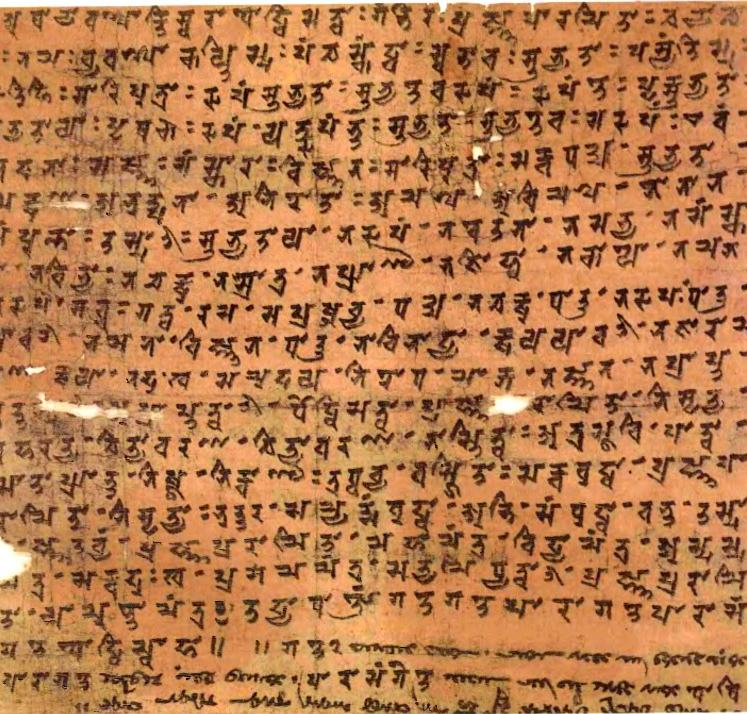

Читка сутр
Каждую субботу двери храма открываются для тех, кто желает услышать слова Дхармы. В этот день монахи оставляют повседневные дела, собираются вместе и проводят общую читку сутр.

Каждую субботу двери храма открываются для тех, кто желает услышать слова Дхармы. В этот день монахи оставляют повседневные дела, собираются вместе и проводят общую читку сутр.
Время проведения заранее объявляет Бонза - настоятель храма. К назначенному часу монахи возвращаются в храм и собираются в главном зале. Внутри поддерживается тишина, зажигаются благовония, а перед началом службы монахи занимают свои места.
Когда все готовы, Бонза начинает обряд. Монахи последовательно читают сутры, повторяя священные тексты единым голосом. Для храма это не просто чтение. Это время, когда Сангха вновь обращается к словам Будды, вспоминает о своих обетах и на некоторое время оставляет за стенами храма шум внешнего мира.
После основной части Бонза может обратиться к присутствующим с наставлением, объяснить смысл прочитанного или поднять определённую тему. Иногда после службы монахи остаются в храме для разговора с посетителями. Человек может задать вопрос о Дхарме, попросить совета, рассказать о своей беде или просто посидеть среди монахов в тишине. На читку может прийти любой желающий. Неважно, является ли он крестьянином, торговцем, самураем или членом какого-либо клана. Храм не спрашивает человека о его происхождении и не требует от него становиться последователем Дхармы. Единственное требование - уважение к храму, службе и присутствующим. Для монаха субботняя читка является неотъемлемой частью жизни Сангхи. Среди странствий, помощи людям, переговоров и других дел легко забыть о том, ради чего был выбран путь монаха. Поэтому раз в неделю Сангха возвращается к своим основам.
Здесь нет места вражде между кланами.
Нет места спорам о богатстве и власти.
Нет места мечам и войне.
Есть только монахи, слова Дхармы и тишина храма.
Мир приходит изнутри. Не ищи его снаружи.Будда Шьякмуни